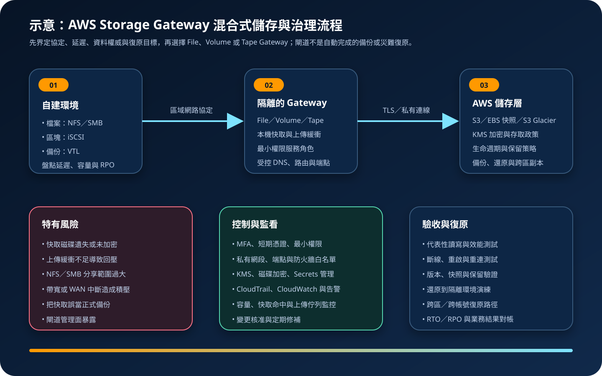

AWS Storage Gateway：混合式儲存與本機快取基礎
AWS Storage Gateway 是混合式雲端儲存服務，讓自建環境以熟悉的檔案、區塊或虛擬磁帶介面連接 AWS 儲存。它能提供本機快取與受管雲端整合，但不會自動解決應用一致性、權限治理、網路容量、備份保留或跨區災難復原。
作者：Dr. William｜查閱與發布：2026-11-23
服務定位
AWS Storage Gateway 適合需要保留自建協定與低延遲本機存取，同時逐步使用 AWS 儲存的混合式環境。閘道可部署為虛擬機器、適用的硬體設備或其他官方支援形式；實際部署選項、區域與功能必須依最新文件核對。
服務目前主要分為 Amazon S3 File Gateway、Volume Gateway 與 Tape Gateway。File Gateway 以 NFS 或 SMB 提供檔案分享，並把檔案儲存為 S3 物件；Volume Gateway 以 iSCSI 提供區塊儲存，支援快取磁碟區或儲存磁碟區模型；Tape Gateway 提供虛擬磁帶櫃介面，讓相容備份軟體把虛擬磁帶寫入 AWS 儲存及封存層。
Storage Gateway 不是通用同步衝突解決工具、資料庫交易複寫服務、無限制低延遲儲存、完整備份產品或自動災難復原方案。若主要需求是一次性大量搬移、資料庫 CDC、伺服器重建、全球檔案協作或原生雲端應用儲存，應另行評估 DataSync、AWS DMS、AWS Transform MGN、S3、EFS、FSx 或應用原生服務。
核心概念
三種閘道類型
- S3 File Gateway：以 NFS／SMB 暴露檔案分享，檔案在 S3 中以物件保存；需理解 POSIX／SMB metadata 與物件模型差異。
- Volume Gateway：以 iSCSI 提供區塊磁碟區，可讓主要資料位於 AWS 並保留本機快取，或讓主要資料保留在本機並建立雲端快照。
- Tape Gateway：模擬虛擬磁帶櫃、磁帶機與媒體更換器，整合既有備份軟體與 S3 Glacier 儲存層。
運作元件
- Gateway appliance：部署於來源附近，承接本機協定與 AWS 服務連線。
- Cache storage：保存常用或待上傳資料；容量不足會直接影響效能與可用性。
- Upload buffer：Volume／Tape 等模式用於暫存待傳送資料，需依變更率與斷線窗口估算。
- Service endpoint：閘道經受控網路連接 AWS；可依支援情況使用公有、VPC 或其他端點模式。
- Local protocol：NFS、SMB、iSCSI 或 VTL 對本機應用提供相容介面。
適合與不適合的使用情境
適合
- 分公司或工廠仍需 NFS／SMB 本機存取，但希望把資料持久保存於 Amazon S3。
- 既有 iSCSI 應用需要本機快取，並希望以 EBS 快照形式建立雲端復原點。
- 備份系統仍依賴磁帶工作流程，但希望以虛擬磁帶取代實體磁帶運輸與保管。
- 需要逐步採用雲端儲存，不適合一次改寫所有應用或立即淘汰自建設備。
- 可明確定義快取、帶寬、分享權限、資料一致性與還原流程的混合式架構。
不適合或不能單獨完成
- 應用要求所有資料永遠具備區域網路等級延遲，但常用資料集超出快取容量且 WAN 不穩定。
- 多站點同時修改同一份資料，卻沒有權威來源、鎖定與衝突處理設計。
- 資料庫或交易系統需要應用一致快照，卻只依賴檔案或區塊層寫入完成狀態。
- 把閘道快取視為唯一副本，或把雲端快照、虛擬磁帶直接等同完整災難復原。
- 來源分享含大量未分類敏感資料，且尚未完成法遵、保留、資料落地與刪除治理。
- 一次性資料搬移完成後不再需要長期混合存取；此情境通常應先評估 DataSync 或離線搬移方案。
示意故事案例：分公司設計檔案集中到 Amazon S3
以下為示意案例，不代表特定企業或正式部署。 一家產品設計公司有三個分公司，各自以 SMB 檔案伺服器保存 CAD、圖片與文件。總部希望集中資料到 S3、套用生命週期與跨區復原，但設計人員仍需要在分公司低延遲開啟常用檔案。
團隊先盤點檔案大小、工作集、每日變更量、鎖定行為、SMB ACL、特殊字元、資料敏感度與斷線容忍時間，再在每個分公司的受控虛擬化叢集部署 S3 File Gateway。閘道管理面只允許管理網段，操作人員使用聯合身分、MFA 與短期工作階段；SMB 分享以企業目錄群組授權，Gateway 的服務角色只允許指定 bucket 與 prefix。
目的 S3 bucket 啟用 Block Public Access、版本、KMS 加密與生命週期，CloudTrail 記錄控制面與適用資料事件，CloudWatch 監控連線、快取、上傳佇列與錯誤。正式上線前先以代表性專案測試檔案鎖定、重新命名、權限、斷線、重連與應用讀寫。重要資料另建立跨帳號備份與跨區復原副本，並在隔離環境執行還原演練；本機快取只負責效能，不被視為備份。

建置與運作流程
- 盤點應用使用的 NFS、SMB、iSCSI 或磁帶協定，以及檔案、區塊或備份軟體相容性。
- 量測常用工作集、總容量、每日變更量、尖峰吞吐、延遲、檔案數量與平均檔案大小。
- 分類資料敏感度、所有權、保留年限、資料落地區域、跨境限制與刪除義務。
- 定義 RTO、RPO、允許斷線時間、快取命中目標、還原粒度與業務驗收門檻。
- 依工作負載選擇 S3 File、Volume 或 Tape Gateway；確認官方支援區域、部署平台、配額與限制。
- 設計高可用虛擬化、電力、儲存、DNS、時間同步、路由、VPN／Direct Connect 與故障路徑。
- 依工作集、寫入率與最長斷線窗口配置快取磁碟及適用的上傳緩衝，使用受保護的本機儲存。
- 把 Gateway 管理面置於受控網段，只允許必要管理來源與 AWS 目的端點。
- 操作人員使用聯合身分、MFA 與短期工作階段；分離部署、分享管理、備份管理與唯讀監看角色。
- 建立專用服務角色，限制到指定 bucket、prefix、快照或虛擬磁帶所需操作及 KMS 金鑰。
- 目的 S3 關閉公開存取，建立 bucket policy、版本、生命週期、Object Lock 或備份控制；依需求使用 KMS。
- 啟用 Gateway 並選定端點模式，驗證 DNS、TLS、MTU、防火牆、代理與 VPC endpoint 設定。
- 建立檔案分享、磁碟區或虛擬磁帶，限制用戶端網段、目錄群組、NFS 主機與 iSCSI initiator。
- 以代表性資料測試讀寫、重新命名、鎖定、ACL、metadata、效能、斷線、重連與重啟。
- 建立 CloudWatch 儀表板與告警，監控可用性、快取命中、髒資料、上傳佇列、吞吐、延遲與錯誤。
- 啟用組織層級 CloudTrail，記錄 Gateway、IAM、KMS、S3、EC2、網路與備份設定變更。
- 分批導入工作負載，觀察本機資源、WAN、快取與 AWS 服務配額，必要時調整容量。
- 對檔案與磁碟區建立應用一致性程序；備份前執行資料庫 quiesce、VSS 或應用原生快照。
- 建立版本、快照、虛擬磁帶保留、跨帳號備份與跨區副本，不把單一 Gateway 當復原方案。
- 定期在隔離環境還原資料、磁碟區或虛擬磁帶，核對 RTO、RPO、權限與業務結果。
- 修補虛擬化平台、作業環境及依賴元件，定期檢查容量、憑證、服務角色與防火牆規則。
- 退役時先確認資料已同步、可還原且保留證據，再撤銷角色、分享、端點與本機磁碟。
成本、可用性與維運考量
Storage Gateway 成本可能包含閘道使用、寫入或儲存資料量、S3 儲存類別與請求、EBS 快照、S3 Glacier 取回、KMS、CloudWatch Logs、VPC endpoint、NAT Gateway、Direct Connect、跨區傳輸、資料取回及提前刪除等費用。File、Volume 與 Tape Gateway 的計價構成不同，必須依官方價格頁、目標區域、資料生命週期與取回頻率估算。
本機還需要虛擬化或硬體、CPU、記憶體、快取磁碟、上傳緩衝、備援電力、監控及維運人力。快取容量不足會降低命中率，WAN 中斷會累積待上傳資料；過小的本機磁碟可能使寫入回壓或服務不可用。估算不能只看總容量，還要納入工作集、變更率、斷線窗口與小檔案比例。
受管雲端服務不代表本機閘道自動高可用。端到端可用性取決於虛擬化平台、本機磁碟、網路、DNS、目錄服務、備份軟體、AWS 端點、S3、KMS 與相關服務。正式環境應設計平台重啟、網路中斷、端點故障、快取損壞、Gateway 重建及資料還原程序；跨區復原需由 S3 複寫、AWS Backup、EBS 快照複製或其他適用機制完成。
AWS Storage Gateway 特有資安風險與控制
- Gateway 管理面暴露：部署在受控網段，限制管理來源與虛擬化權限，不把啟用或管理介面直接暴露於網際網路。
- 長期憑證散落：操作人員使用聯合身分、MFA 與短期工作階段；不得把 credential、Access Key、Secret Key、Token、密碼或 cookie 寫入分享、腳本、頁面或日誌。
- 服務角色權限過大：每個 Gateway 或工作負載使用專用角色，限制 bucket、prefix、快照、磁帶與 KMS 操作。
- NFS／SMB 分享範圍過大：以用戶端白名單、目錄群組、ACL 與最小分享範圍限制存取，避免匿名或不必要的 guest 存取。
- iSCSI initiator 未受控：限制來源網段、initiator 與 CHAP 等適用驗證，避免未授權主機掛載磁碟區。
- 本機快取磁碟遺失：使用受保護的本機儲存、限制主機實體與管理權限，依平台能力啟用磁碟加密，確認遺失或重建程序。
- 快取或上傳緩衝容量不足：依工作集、變更率與最長斷線時間配置容量，對 cache percent dirty、buffer 使用率與排隊量告警。
- 資料在 WAN 上傳輸：使用 TLS 與受控端點，依需求採 VPN、Direct Connect 或支援的 VPC endpoint，限制 DNS、路由及防火牆目的地。
- S3 公開存取：啟用 S3 Block Public Access，限制 bucket policy、access point 與跨帳號存取，定期以 Access Analyzer 或適用工具檢查。
- KMS 金鑰不可用：限制 key policy 與 grant，監控停用、排程刪除及拒絕事件，驗證 Gateway 角色可在復原時使用金鑰。
- 機密寫入設定或日誌：整合所需密碼或秘密放在 Secrets Manager／Parameter Store 等受控服務，不在 Gateway 說明、腳本與告警中保存明文。
- 檔案與 S3 物件語意不同：測試重新命名、鎖定、ACL、metadata、特殊字元與多用戶端寫入，指定權威來源與一致性規則。
- 備份應用不一致：磁碟區快照或檔案複製前執行應用 quiesce、VSS 或資料庫原生備份，不能把完成上傳等同交易一致。
- 虛擬磁帶保留遭竄改：分離備份管理與刪除權限，使用適用的保留鎖定、MFA、跨帳號備份與不可變控制。
- 控制面無法追溯：以 CloudTrail 集中記錄 Storage Gateway、IAM、KMS、S3、EC2、網路與備份變更，保護日誌完整性。
- 運作異常未被發現：以 CloudWatch 監控 Gateway 可用性、快取、佇列、吞吐、延遲與錯誤，建立分級告警與值班程序。
- 單一站點故障：建立跨帳號／跨區副本、Gateway 重建文件、隔離還原環境與定期演練，核對 RTO／RPO。
- 退役造成資料遺失：刪除前確認全部資料已同步、快照或磁帶可讀、保留要求完成，並撤銷角色及分享存取。
共同責任邊界
AWS 負責 Storage Gateway 受管服務及其底層雲端基礎設施，提供 Gateway 與 AWS 儲存整合、資料傳輸保護、服務控制面，以及與 IAM、KMS、CloudTrail、CloudWatch 等服務整合的能力。
客戶負責資料分類與授權、Gateway 部署平台、本機磁碟與快取、NFS／SMB／iSCSI／VTL 設定、IAM 最小權限、MFA 與短期憑證、網路隔離、公開存取、KMS 政策、Secrets Manager／Parameter Store、應用一致性、CloudTrail／CloudWatch、修補、容量、備份、還原演練與跨區復原。Gateway 顯示正常或資料已上傳，不代表應用、權限與災難復原已完成驗收。
上線與維運可執行檢查清單
- □ 協定、應用、資料量、檔案數、工作集、變更率、延遲與帶寬清冊完整。
- □ 資料敏感度、所有權、保留、資料落地、跨境與刪除資格已核准。
- □ 已選擇正確的 File、Volume 或 Tape Gateway，並核對區域、部署選項、配額與限制。
- □ RTO、RPO、斷線窗口、快取命中、還原粒度與業務驗收標準已定義。
- □ 虛擬化、電力、本機磁碟、DNS、時間同步與網路具備已測試的故障處理方式。
- □ 快取與上傳緩衝容量依工作集、變更率及斷線窗口估算，並有容量告警。
- □ Gateway 管理面位於受控網段，未直接暴露於網際網路。
- □ 操作人員使用聯合身分、MFA 與短期工作階段，無長期憑證散落。
- □ 服務角色只允許指定 bucket、prefix、快照、磁帶與 KMS 操作。
- □ NFS 主機、SMB 群組、ACL、iSCSI initiator 與 VTL 管理權限符合最小權限。
- □ S3 Block Public Access、bucket policy、版本、生命週期與適用不可變控制已驗證。
- □ KMS key policy、grant、停用風險、輪替與復原時的解密權限已測試。
- □ 密碼與整合秘密集中於 Secrets Manager／Parameter Store 等受控服務。
- □ 公有／VPC 端點、DNS、路由、防火牆、TLS、VPN／Direct Connect 與 MTU 已測試。
- □ 代表性資料已測試讀寫、重新命名、鎖定、ACL、metadata 與特殊字元。
- □ 已完成網路中斷、Gateway 重啟、快取失效、重連與重建測試。
- □ CloudTrail 已集中記錄 Gateway、IAM、KMS、S3、網路與備份控制面操作。
- □ CloudWatch 已告警 Gateway 可用性、快取髒資料、佇列、吞吐、延遲與錯誤。
- □ 應用一致性快照、資料庫 quiesce、VSS 或原生備份程序已建立。
- □ 版本、快照、虛擬磁帶、跨帳號備份與跨區副本均有保留政策。
- □ 已在隔離環境完成還原演練，RTO、RPO、權限與業務結果符合門檻。
- □ 退役程序包含同步確認、復原點驗證、角色撤銷、分享關閉與證據保留。
AWS 官方一手來源
- What is AWS Storage Gateway?（查閱：2026-11-23）
- How AWS Storage Gateway works（查閱：2026-11-23）
- What is Amazon S3 File Gateway?（查閱：2026-11-23）
- Volume Gateway overview（查閱：2026-11-23）
- What is Tape Gateway?（查閱：2026-11-23）
- Getting started with Storage Gateway（查閱：2026-11-23）
- Storage Gateway requirements（查閱：2026-11-23）
- Security in AWS Storage Gateway（查閱：2026-11-23）
- Identity and access management for Storage Gateway（查閱：2026-11-23）
- Data protection and encryption（查閱：2026-11-23）
- Monitoring Storage Gateway（查閱：2026-11-23）
- Logging Storage Gateway API calls with CloudTrail（查閱：2026-11-23）
- Storage Gateway performance guidance（查閱：2026-11-23）
- Network and firewall requirements（查閱：2026-11-23）
- AWS Storage Gateway Pricing（查閱：2026-11-23）
- AWS Shared Responsibility Model（查閱：2026-11-23）
內容說明
本文依 2026-11-23 可查閱的 AWS 官方文件整理。Storage Gateway 的閘道類型、部署選項、端點、區域、配額、協定行為、監控指標與定價可能更新；正式導入前應依目標區域最新文件、代表性工作負載測試、資安審查、費用估算及隔離還原演練為準。